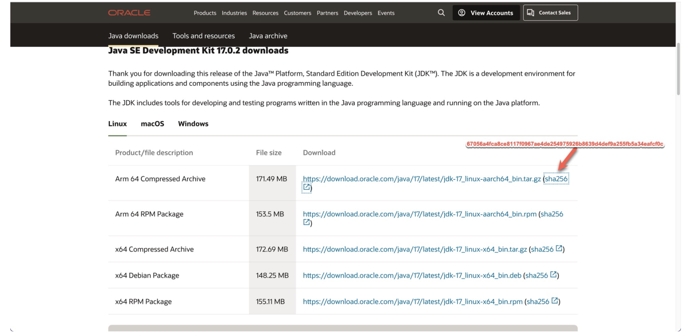

.terraform.lock.hcl 简介
每种编程语言都有自己的包管理工具，Javascript 有 npm，Ruby 有 Bundler，Python 有 pip。这类管理工具通常会为项目创建一个类似 package.lock 的文件，锁定项目依赖版本，从而保证在不同的机器上运行程序时，依赖环境都相同。
- 对于 Ruby 项目，这个文件是
Gemfile.lock - 对于前端项目，这个文件是
package-lock.json或yarn.lock - 对于Python 项目，这个文件是
Pipfile.lock
Terraform 也有“包”的概念，称之为 module。每个 module 打包了一堆资源。在代码中引入一个module，就会创建了这个包中的一堆资源。
module 初体验
比如要在 AWS 中创建一个web服务器的安全组（Security Group），需要创建 Security Group，Ingress Rule，Egress Rule。
resource "aws_security_group" "web-server" {
name = "web-server"
vpc_id = module.vpc.vpc_id
ingress {
description = "HTTP"
from_port = 80
to_port = 80
protocol = "tcp"
cidr_blocks = "0.0.0.0"
}
ingress {
description = "HTTPs"
from_port = 443
to_port = 443
protocol = "tcp"
cidr_blocks = "0.0.0.0"
}
egress {
from_port = 0
to_port = 0
protocol = "-1"
cidr_blocks = ["0.0.0.0/0"]
}
}
但是如果你使用 AWS Security Group module ，几行代码就搞定了。
module "web_server_sg" {
source = "terraform-aws-modules/security-group/aws"
name = "web-server"
description = "Security group for web-server with HTTP ports open within VPC"
vpc_id = "vpc-12345678"
ingress_rules = ["http-80-tcp", "https-443-tcp"]
egress_rules = ["all-all"]
}
你甚至可以在 module 中打包一份 RDS，Redis，Memcached，EC2， S3的资源全家桶，一口气创建整个 web 应用的技术栈。
.terraform.lock.hcl 用途
写好了 Terraform 代码，需要先执行 terraform init 初始化，这条命令会创建一个文件 .terraform.lock.hcl。
熟悉其他编程语言的程序员，往往会误解这个文件，认为它是 module 的版本锁定文件。
事实上它并不锁定 module 的版本，它只锁定 provider 的版本。
Terraform Documentation:
At present, the dependency lock file tracks only provider dependencies. Terraform does not remember version selections for remote modules, and so Terraform will always select the newest available module version that meets the specified version constraints. You can use an exact version constraint to ensure that Terraform will always select the same module version.
.terraform.lock.hcl 中有什么？
这是一个 .terraform.lock.hcl 范例，里面并没有各种 module 的版本信息，那它有什么？
provider "registry.terraform.io/hashicorp/aws" {
version = "3.63.0"
constraints = ">= 2.7.0, >= 2.42.0, >= 2.49.0, >= 3.27.0, 3.63.0"
hashes = [
"h1:Z+2GvXLgqQ/uPMH8dv+dXJ/t+jd6sriYjhCJS6kSO6g=",
"h1:lf8Qex8bhCmh8TUEAU6H4brzjy3+d4BXB6gcOYnNtNY=",
"zh:42c6c98b294953a4e1434a331251e539f5372bf6779bd61ab5df84cac0545287",
"zh:5493773762a470889c9a23db97582d3a82035847c8d3bd13323b4c3012abf325",
"zh:550d22ff9fed4d817a922e7b84bd9d1f2ef8d3afa00832cf66b8cd5f0e6dc748",
"zh:632cb5e2d9d5041875f57174236eafe5b05dbf26750c1041ab57eb08c5369fe2",
"zh:7cfeaf5bde1b28bd010415af1f3dc494680a8374f1a26ec19db494d99938cc4e",
"zh:99d871606b67c8aefce49007315de15736b949c09a9f8f29ad8af1e9ce383ed3",
"zh:c4fc8539ffe90df5c7ae587fde495fac6bc0186fec2f2713a8988a619cef265f",
"zh:d0a26493206575c99ca221d78fe64f96a8fbcebe933af92eea6b39168c1f1c1d",
"zh:e156fdc964fdd4a7586ec15629e20d2b06295b46b4962428006e088145db07d6",
"zh:eb04fc80f652b5c92f76822f0fec1697581543806244068506aed69e1bb9b2af",
"zh:f5638a533cf9444f7d02b5527446cdbc3b2eab8bcc4ec4b0ca32035fe6f479d3",
]
}
让我们来逐行分析这个文件。
- 第1行，你的 terraform 代码依赖
aws provider。 - 第2行，
provider的version。由 terraform 根据一些规则帮你选定。 - 第3行，
constraints表示provider版本的限制条件。 你的代码中引入了多个 module 后，每个module 都对 aws provider 有版本要求，于是 Terraform 就把它们汇总了起来。所以第2行的版本其实是由第3行的constraints决定的。 - 第4行，
hashes代表checksum，用来确保下载的provider并没有被人恶意篡改过。
什么是 checksum？
文件经过加密函数处理后，都会生成唯一对应的哈希值，不同文件有不同的哈希值。
- 文件1 —> 加密函数 —> 哈希值1
a7iwc - 文件2 —> 加密函数 —> 哈希值2
ufj4c - 文件3 —> 加密函数 —> 哈希值3
4iEDH - 文件4 —> 加密函数 —> 哈希值4
xca3t
checksum 用于“文件防篡改”。比如 Java 官方网站会挂出每个版本的下载地址，但是它的下载速度太慢了。于是你在一些非官方的镜像网站下载了 Java，但是又可能怎么保证这些文件是安全的，没有篡改过呢？
你可以用加密函数对下载的文件进行计算，得到一个哈希值。
- 如果你得到的哈希值与 Java 官网一致，说明文件没被篡改。
- 如果你得到的哈希值和官网不一致，说明文件被人动过手脚了

Terraform 中的 hashes 也是类似道理，当 Terraform 发布某个版本的 provider 时，用特定的哈希算法为该版本创建哈希值。如果你下载的文件和这个 hash 值对不上，就表示文件被篡改了。
为什么有的哈希值的前缀是 h1:，有些前缀是 zh？
h1和 zh 代表了不同的哈希算法，所以会产生两份哈希值。
既然一个特定版本会产生两份哈希值，为什么示例文件有 12 个哈希值？
这可能与我运行了以下命令又关系。
我的同事有些使用 Mac 上，有些使用 Windows 上，有些使用 Ubuntu 上，此外 Atlantis 运行在 Ubuntu 上。所以我执行了以下命令，把所有平台的哈希值都计算好了，这样同事们在自己的电脑或服务器上执行。
我猜测：
哈希值的数量 = 版本 * 平台数量 * 哈希函数数量
terraform providers lock \
-platform=linux_arm64 \
-platform=linux_amd64 \
-platform=darwin_amd64 \
-platform=windows_amd64
锁定 module的版本号
既然 .terraform.lock.hcl 文件无法锁定 module 的版本，如何锁定 module的版本号呢？
module "vpc" {
source = "terraform-aws-modules/vpc/aws"
version = "2.21.0" #指定版本号
name = "${var.project}-${var.environment}"
cidr = var.vpc_cidr
azs = var.vpc_azs
public_subnets = var.vpc_public_subnets
private_subnets = var.vpc_private_subnets
tags = local.tags
}
看完本文，如果非要记住一个结论，那就是 .terraform.lock.hcl并不锁定 module 的版本，它只锁定 provider 的版本。